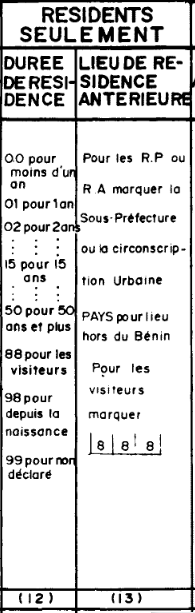
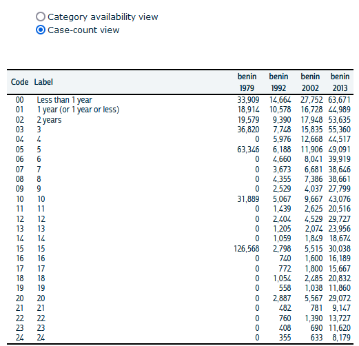
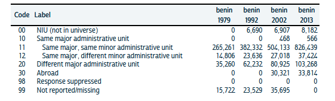
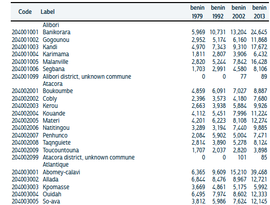

9 Migrations antérieures
9.1 Définition générale
Nous proposons dans ce chapitre une analyse des migrations antérieures c’est-à-dire des différences entre le lieu de naissance et le lieu de résidence précédent déclaré au moment du recensement associé à la durée de résidence dans le domicile actuel et au lieu de naissance. Le problème de cette définition c’est qu’elle peut aboutir à des formes différentes de question et de codage des réponses dans les recensements de différents pays ou d’un même pays au cours du temps.
Considérons notre exemple théorique du chapitre précédent et la question posée lors du recensement de 1992 au Bénin :


Notre individu réside en 1992 à Abomey-Calavi où il est arrivé en 1983. Il va donc répondre à la première question du recensement qu’il réside dans son logement depuis 9 ans et que son lieu de résidence antérieur était la commune de Parakou, située dans le département du Borgou. Comme on sait par ailleurs qu’il est né à Mallanville, on peut reconstituer deux migrations antérieures.
Si on lui avait posé la question au recensement de 1979, il aurait été recensé à Parakou où il aurait déclaré vivre depuis 6 ans avec pour lieu de résidence antérieure Mallanville qui est aussi son lieu de naissance.On ne connaîtrait donc qu’un seul trajet migratoire ce qui est logique puisqu’à cette date il n’en avait pas effectué d’autres.
Mais si on lui pose la question en 2002, il sera recensé à Grand Popo et déclarera y résider depuis 7 ans avec pour lieu de résidence antérieure Abomey-Calavi. On ignore désormais qu’il a résidé à Parakou et on supposera qu’il est arrivé directement de Mallanville à Abomey-Calavi.
Si enfin on lui pose la question en 2013 où il est revenu sur son lieu de naissance qui est Malanville, il va déclarer y résider depuis 1 an en indiquant pour lieu de résidence antérieure Abomey-Calavi. On considérera donc à tod qu’il a effectué une migration aller et retour alors qu’en réalité son parcours aura été infiiment plus complexe avec deux passages par Abomey-Calavi et des périodes de résidence à Parakou ou Grand Popo.
Comme il est exclu d’apparier les codes d’individu d’un recensement à l’autre pour des raisos d’éthique et d’anonymat, on concluera qu’il est impossible de retrouver les parcours de vie complet d’un individu à partir des données de recensement. Tout au plus peut-on en retrouver quelques traces partielles* mais dont la comparaison n’est pas toujours facile car les questions différent d’une date à une autre ou d’un pays à un autre.
9.2 Variables IPUMS
IPUMS 2010 a tenté dans la mesure du possible d’harmoniser les données de résidence antérieure mais il signale à plusieurs reprise la difficulté de l’entreprise et les métadonnées concluent généralement à une certaine fragilité des résultats. A tout le moins, le site fournit des métadonnées très précises et des copies des formulaires de recensement permettant d’y voir plus clair et d’évaluer les degrés de comparabilité.
9.2.1 Durée de résidence dans la localité actuelle (MIGYRS1)
La page de description de la variable MIGYRS1 nous fournit d’abord une description de la durée de résidence qui montre des différences de précision selon les années. En 1979, les modalités étaient de nature qualitatives alors que dans les recensements suivants on dispose d’un nombre plus précis d’année mais avec des maxima fixés à 50 ans en 1992, 60 ans en 2002 et 98 ans en 2013.

Comme l’indique le commentaire général d’IPUMS sur cet indicateur au niveau mondial :
La variable est conceptuellement similaire d’un échantillon à l’autre, mais il existe des problèmes de comparabilité en ce qui concerne les données échelonnées, les unités géographiques et les univers. Certains échantillons ont déclaré l’année de migration sous forme d’intervalles. Les données de ces échantillons sont codées en MIGYRS1 jusqu’à la première année de l’intervalle. La discussion de comparabilité pour le pays indique quand un échantillon a été codé en intervalles. Les intervalles d’origine sont enregistrés dans les variables sources non harmonisées. La plupart des échantillons font état de migrations pour des unités géographiques relativement petites d’un sous-pays, telles que des villages ou des municipalités. Certains font état d’unités un peu plus grandes, comme le deuxième niveau administratif du pays.
On sera donc très prudent lorsqu’il s’agit de comparer deux pays, mais on peut être plus confiant à l’intérieur d’un même pays, à condition que les unités géographiques définissant la mobilité demeurent les mêmes d’un recensement à l’autre. Dans le cas du Bénin, la variable MIGRATEP permet de vérifier qu’il est toujours possible de reconstituer si un individu à changer de commune ou de département à chaque recensement. Il n’est en revanche pas possible de connaître l’effectif exact des personnes originaires de l’étranger en 1979 et en 1992.

9.2.2 Lieu de résidence antérieure (MIG1_P_BJ, MIG2_P_BJ)
Dans le cas du Bénin, la stabilité du découpage administratif des départements et des communes au cours du temps assure une qualité de comparaison qu’on ne retrouverait pas dans d’autres pays. On dispose e effet pour chaque date de la commune (MIG2_P_BJ) et du département (MIG1_P_BJ) de résidence antérieure, avec le même degré de précision que celui noté pour les lieux de naissance. Il existe une minorité de cas où l’agent recenseur a recensé les départements de résidence antérieurs sans préciser la commune mais il sont peu nombreux et peuvent être facilement éliminés. On peut également repérer les lieux de résidence antérieurs à l’étranger à l’aide la variable

9.3 Création d’indicateurs
Nous allons maintenant compléter la base de donnée établie pour les migrations durée de vie en y ajoutant des indicateurs relatifs aux lieux de résidence antérieurs et à la durée d’installation dans le lieu de résidence actuel.
9.3.1 Nouvelles variables
### Load data
rp <- readRDS("ipums/rp/mobil_benin_4dates_samp10pct.RDS" )
# Align duration of residence on 1979
RES_TIM<-as_factor(rp$MIGYRS1)
levels(RES_TIM)[1]<-"0"
levels(RES_TIM)[2]<-"1"
levels(RES_TIM)[96]<-"95"
levels(RES_TIM)[97]<-NA
levels(RES_TIM)[98]<-NA
levels(RES_TIM)[99]<-NA
levels(RES_TIM)[100]<-NA
RES_TIM<-as.numeric(RES_TIM)
RES_TIM<-cut(RES_TIM, c(0,2,5,10,15, 100))
rp$MIG_ANT_TIME<-RES_TIM
### Level I : Create new variables and filter
rp<-rp %>% mutate(LEV1_RES = as.character(GEOLEV1),
LEV1_ANT = as.character(MIG1_P_BJ)) %>%
filter(substr(LEV1_ANT,5,5) !="9") %>%
mutate(MIG_PR_1 = as.numeric(LEV1_RES!=LEV1_ANT))
### Level II Create new variables and filter
rp<-rp %>% mutate(LEV2_RES = as.character(GEOLEV2),
LEV2_ANT = as.character(MIG2_P_BJ)) %>%
filter(substr(LEV2_ANT,8,9) !="99") %>%
mutate(MIG_PR_2 = as.numeric(LEV2_RES!=LEV2_ANT))
saveRDS(rp,"ipums/rp/mobil_benin_4dates_samp10pct_V2.RDS" )